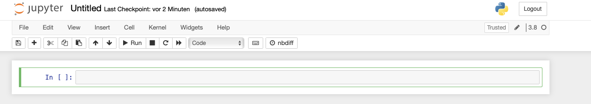

What is Python and why use it?¶
Python (named after the comedy troupe Monty Python) is an interpreted programming language, meaning the written code needs to be “translated” to commands for the machine by a so called interpreter in order to be run. This apparent detour however makes for a better readability, writability and error location for us humans. Python is free to use and it’s also free to contribute by writing own packages. As of February 2021, the TIOBE index, a measure for popularity of programming languages, ranks python third (behind C and Java), stating its widespread acceptance and usage. One field in which python has had major impact is statistics and emerging from it, data science. A plethora of packages are available to work with data smoothly in many ways. Eventually, in order to come to this joy, one must first install python properly.
Installation¶
Albeit there are different ways to install and manage python and its packages and versions is to use the Anaconda distribution. It comes with a variety of programs and allows for a simple installation of all needed dependencies. Furthermore, it accesses the conda repository to provide a user-friendly installation of additional packages.
Installing more Packages¶
On the left in the anaconda navigator, click on “Environments”. A list of all installed packages is shown with the respective version on the right. Blue colour and a little arrow indicate that updates for this package are available.
Warning
New is not always better. As some packages may depend on others, their latest update might come with changes not yet supported. Check for compatibility before updating!
Selecting “not installed” provides a list of not (yet) installed packages. The search panel lets you find the desired package. To install, select the checkbox and click “Apply” (appears only after checking a box) in the lower right corner.
Jupyter Notebook¶
After a successful installation, feel free to make yourself familiar with the included programs. However, this course will depend mainly on the use of jupyter notebooks. These are web applications and thus should open a browser window where they offer all the functionality necessary for this course. Besides the usual coding, they offer ways to present your code clearly by enabling more formatting functionality, e.g. with markdown.
Double click the jupyter symbol in your anaconda navigator to start and get a browser window opened, looking similar to this:

You should be able to browse your files and navigate to any folder. Feel invited to experiment with opening different data types you find on your machine.
To open a new notebook, click the drop down menu new on the right and choose your installed python version. A new tab in your browser opens with an empty notebook.

On the very top “Untitled” is found. By clicking on it, one can rename the file. Make yourself familiar with all possible options in the bar beneath the title. Since most options you will discover can be called by Keyboard shortcuts, making use of the shortcuts will reduce the number of times where the mouse is needed and it is thus highly recommended. Press “h” on your Keyboard to view the available keyboard shortcuts. In the following some useful shortcuts for basic operations are presented:
to enter edit Mode, press enter. The blue frame of the currently selected cell will change to green and a cursor will appear inside the cell. Write your name and press escape to leave edit mode.
press b to create a new cell below the current cell. Then use the up arrow to navigate your selection back to the first cell.
press a to create a new cell above the currently selected cell.
navigate to the lowest cell and double press d to delete it
Inside the cells, code is written and each cell can be run separately. When running all cells at once, they will be executed from top to bottom.
First steps¶
This chapter provides an introduction to basic commands and useful built-in libraries.
As mentioned, this course will rely on jupyter notebooks. Code will be written in cells, which can be run independently.
To run a cell, one can use the run symbol above the cells by clicking on it. A more convenient way is again using the corresponding keyboard shortcut: holding shift and pressing enter.
This will run the current cell and select the next cell below.
import sys
sys.version
'3.9.5 (default, May 4 2021, 03:36:27) \n[Clang 12.0.0 (clang-1200.0.32.29)]'
Basic Python¶
Just starting a jupyter notebook and thus a python kernel already allows several basicoperations. The perhaps most obvious functionality would be to use a cell to calculate a mathematical expression. To do so, just enter the expression and run the cell:
999+1
1000
# comments inside the cell, starting with '#' help readers to understand your code.
# These lines are not run!
2 * (2 + 2) - 4
4
While jupyter will print the result of such one line expressions immediately, writing both expressions in one cell will print only the last computed result:
999+1
2 * (2 + 2) - 4
4
In the common case, where code inside one cell will exceed one line or will produce more than just on result, the print() function can be used. Functions in python get their parameters in parentheses (more on functions later):
print(999+1)
print(2 * (2 + 2) - 4)
1000
4
Some basic operations and functions are
print('Addition:', 1 + 1 )
print('Subtraction:', 2 - 1 )
print('Division:', 1 * 2 )
print('Multiplication:', 2 / 1 )
print('Modulus:', 3 % 2 )
print('Floor division:', 5 // 2 )
print('Exponent:', 2 ** 3 )
print('Minimum:', min(2,5))
print('Maximum:', max(2,5))
Addition: 2
Subtraction: 1
Division: 2
Multiplication: 2.0
Modulus: 1
Floor division: 2
Exponent: 8
Minimum: 2
Maximum: 5
Autocompletion is a very useful tool for writing code. Not only will it provide already defined variables. It will also show you available methods on different objects (more on objects later).
Autocompletion or suggestions for completion will appear when pressing tab in code, as long as it is not the beginning of a line (where it will indent the line, see loops, functions).
For instance, when typing pri and hitting tab, jupyter will complete it to print.
Help¶
In order to get information, for example on the print()function, help can be summoned by using yet another function:
help(print)
Help on built-in function print in module builtins:
print(...)
print(value, ..., sep=' ', end='\n', file=sys.stdout, flush=False)
Prints the values to a stream, or to sys.stdout by default.
Optional keyword arguments:
file: a file-like object (stream); defaults to the current sys.stdout.
sep: string inserted between values, default a space.
end: string appended after the last value, default a newline.
flush: whether to forcibly flush the stream.
Data Types¶
The most basic data types in python are numeric, string and boolean. However, there are many, many more. In order for many operations wo work properly, the data types must be compatible with one another. With the type() function the datatype of an object can be printed.
a = 1
b = 1.0
c = 'two'
d = True
print('a:', type(a))
print('b:', type(b))
print('c:', type(c))
print('d:', type(d))
a: <class 'int'>
b: <class 'float'>
c: <class 'str'>
d: <class 'bool'>
Changing the type of a variable can be achieved by the respective functions:
print(int(3.14))
f = "2.5"
print(10 + float(f))
3
12.5
Some mathematical operations can also be applied to strings/lists:
a = 'Who would '
b = 'have thought'
c = '?'
print(a+b+(c*5))
Who would have thought?????
Packages and Modules¶
Python’s functionality can be expanded by loading modules to the namespace. A module may be seen as a chunk of python code for a special task someone has already written for you to use while package signifies the inclusion of the underlying file structure to load the modules.
In order to make a module’s complete functionality available, it has to be loaded to the namespace trailing the import statement. Calling a module function in this case requires the module name with a dot before the function: package.function().
A module can be imported under an alias, using the as statement. This can help someone reading your code to know from which module a function is imported while keeping the code shorter and thus better readable.
Tip
By convention all imports are done at the beginning of the code.
import math
print(math.sqrt(4))
import numpy as np
print(np.sqrt(4.0))
2.0
2.0
To import a single function (or class) from a module one calls from <module> import <function>. Here, the module’s name does not need to be added when calling the function. Similarly, an asterisk can be used as a wild card, as in from <package> import *, to import all functions (classes) from one module (so not to add the module prefix every time in the code).
The following examples uses the math module, which contains functions such as the sine, cosine or square root.
from math import sqrt
print(sqrt(4))
2.0
Note
Calling a function which is not imported results in an error.
Usually, python is rather explicit in where to look for your mistake.
#print(cos(0)) # would raise error as cos() function is not imported

With the wild card, all functions from the math module are now loaded to the namespace.
from math import *
cos(0)
1.0
Variables¶
Objects can be stored in variables by assigning them using =. Since everything in python is an object, anything can be saved in a variable: numbers, strings, lists, etc. Python will automatically recognize the format of a variable to let the user know about incompatibilities. Calling a variable before it is assigned will also throw an error.
Note that python is case sensitive, meaning that when assigning variables a ≠ A.
var_1 = 5 ** 2
print(var_1)
var_2 = 'twenty five'
print(var_2)
25
twenty five
Caution
Do not name your variables like built-in python objects!
In jupyter notebooks, built-in objects are automatically coloured green. For example:
list
int
dict
dict
Logical Conditions¶
In order to compare values, logical operators can be used. The most common are
Operator |
Meaning |
|---|---|
== |
equal |
1!= |
not equal |
> |
greater than |
< |
less than |
>= |
greater than or equal to |
<= |
less than or equal to |
The result will be a boolean: either True or False.
Comparing statements may also be combined by and or or and can be negated by not.
a = (1<2)
b = (0 == 1)
print(a, b)
print(a and b)
print(a or b)
True False
False
True
Branching¶
In a program, code must often be run conditionally on some input or previous result. The if, else and elifstatement can be used to select which branch of code shall be run. The condition is followed by a colon and the respective code for that condition must be indented (automatically with a line break or by pressing tab).
Caution
Indentation is not to be used for better readability.
Instead, it has a function and must not be used when not necessary!
a = 4
if a < 0:
print('a is negative')
elif a > 0:
print('a is positive')
else:
print('a equals zero')
a is positive
Lists and Tuples¶
Lists and tuples are both an ordered collection of objects. While tuples cannot be modified, lists are rather flexible. Objects can be added to a list, removed or replaced. Lists appear in square brackets [], tuples in parentheses ().
Lists and tuples can be nested, meaning elements of a list or tuple can again be a list or tuple. Duplicates are also allowed. (A set() would not allow duplicates and is not ordered).
Elements can be accessed by indexing with square brackets behind the list name.
Note
Indexing in python starts with zero, so the first element of a list will have index 0.
my_list = [1,2,0,4,5]
my_tuple = ('a', 'b', 'c')
# length of object:
print('0. the length of my list is', len(my_list),', the length of the word "list"', len('list'))
# access first element
print('1. first element from my_list:', my_list[0])
# print variables more conveniently
print(f'2. second element of my_tuple: {my_tuple[1]}')
# to change an element
my_list[2] = 3
print(f'3. changing the third element in my_list: {my_list}')
# note that strings are lists of characters:
my_str = 'expression'
print(f'4. first letter in my_str: {my_str[0]}')
# last element
print(f'5. last element of my_tuple: {my_tuple[-1]}')
# slicing
print(f'6. from element 3 to end of my_list: {my_list[2:]}')
# reverse order
print(f'7. reverse order of my_list and slice: {my_list[3::-1]}')
# delete element
del(my_list[4])
print(f'8. add new element: {my_list}')
0. the length of my list is 5 , the length of the word "list" 4
1. first element from my_list: 1
2. second element of my_tuple: b
3. changing the third element in my_list: [1, 2, 3, 4, 5]
4. first letter in my_str: e
5. last element of my_tuple: c
6. from element 3 to end of my_list: [3, 4, 5]
7. reverse order of my_list and slice: [4, 3, 2, 1]
8. add new element: [1, 2, 3, 4]
Lists also allow for element checks using in (negated by not):
my_list = [1,2,3,4]
if 2 in my_list:
print('2 is an element of my_list')
if 10 in my_list:
print('10 is an element of my_list')
2 is an element of my_list
Beside definition by hand, the the functions list() and tuple() can be used to transform a suitable object to a list or tuple.
print(tuple(my_list))
print(list('python'))
(1, 2, 3, 4)
['p', 'y', 't', 'h', 'o', 'n']
Dictionaries¶
Dictionaries allow to store key - value pairs in a kind of named list fashion. By convention the key element is of type string, while the value can be any object (including dictionaries). To define a dictionary, inside curly braces {}, the key element is followed by a colon and the value. The keys must be unique in a dictionary, since the value elements are accessed via the respective key: as in lists, one uses square brackets. Yet not with an index number but the desired key.
New key-value pairs can be added to a dict in a similar way as they are accessed. The new key in square brackets follows the dict name and a value is assigned by an equal sign.
Dictionaries are not ordered, as can be seen from the way of accessing and adding new k-v pairs.
my_dict = {'start': 1, 'end': 20}
print(my_dict['start'])
# new k-v pair
my_dict['mid'] = 10
print(my_dict)
1
{'start': 1, 'end': 20, 'mid': 10}
All keys and value can be accessed with the .keys() and .values() method (more on methods later).
print(my_dict.keys(), my_dict.values())
dict_keys(['start', 'end', 'mid']) dict_values([1, 20, 10])
(Un)packing¶
Python allows to assign multiple variables at once, called (un)packing. This is most common with tuples but can be expanded to other iterables. The variables to be assigned are separated by a comma.
my_tuple = ('one', 2, 'three')
a, b, c = my_tuple
print(a, b, c)
# the asterisk assigns all surplus values on the right hand side of the equal sign to a
*a, b = 1, 2, 3, 4
print(a ,b)
one 2 three
[1, 2, 3] 4
Loops¶
for-loop¶
A for-loop is used for iteration, if the number of iterations is known prior to execution. A for loop iterates over any sequence like lists, tuples, strings etc. A common way is to loop over a range(n) object. Caution: indexing starts from 0 and for range objects ends at n-1!\
Note that when iterating a list or tuple it might be worth considering to choose an informative name (especially when nesting loops).\
To write a loop, for is followed by the iterating variable, in and the sequence to iterate before a colon. The code to execute every step begins in the next line and is indented.
# range object for iterating numbers
for i in range(5):
print(f'{i} squared is {i**2}')
print('')
# iterate over a tuple/list
for tuple_element in my_tuple:
print(tuple_element)
print('')
# iterate over tuple/list element and index
for i, tup_el in enumerate(my_tuple):
print(f'{tup_el} at position {i}')
print('')
# iterate over keys and values in dict
for k,v in my_dict.items():
print(f'key: {k}, value: {v} ')
0 squared is 0
1 squared is 1
2 squared is 4
3 squared is 9
4 squared is 16
one
2
three
one at position 0
2 at position 1
three at position 2
key: start, value: 1
key: end, value: 20
key: mid, value: 10
while-loop¶
When the number of iterations for a loop is not knwon beforehand, a while-loop can be used. It will run, until a terminal state is reached or some criterion is satisfied. Usually, an initial state is given which will be altered by some operation and thus lead to termination.
A while-loop start with while followed by the condition and a colon. The condition may be negated with not.\
Warning
Infinit loops may occur when the terminal criterion is not properly defined or the code is otherwise defective.
a = 0
while a < 4:
print(a)
# use combined operator a += 1, equal to a = a + 1
a += 1 # when not including this line, a will forever stay a = 0 and the loop will not terminate by itself
# What will be printed in this case?
var = 5
check = True
while check:
print(f'{var} is greater zero')
var -= 1
check = var > 0
0
1
2
3
5 is greater zero
4 is greater zero
3 is greater zero
2 is greater zero
1 is greater zero
List comprehension¶
Python offers a handy way to create lists. It looks like a for-loop in a list and is called list comprehension. It is written in one line instead of indenting as in ordinary for-loops. These expression can also be nested.
list_1 = [i for i in range(5)]
print('list_1:', list_1)
# a nested expression
list_2 = [[i*j for i in list_1] for j in [0,1]]
print('list_2:', list_2)
list_1: [0, 1, 2, 3, 4]
list_2: [[0, 0, 0, 0, 0], [0, 1, 2, 3, 4]]
break and continue¶
For more control over a loop, the breakand continue statements can be engaged. Used with a condition, break will terminate the loop when satisfied while continue will stop and skip the current iteration to jump to the next.
for i in range(100):
if i % 2 != 0: # % is the modulo operator
continue # continue in the if-statement skips printing for odd i
print(f'{i} is even')
if i == 8: # when i equals 8, the loop terminates (the print statement for i == 8 is executed before)
break
0 is even
2 is even
4 is even
6 is even
8 is even
Functions¶
Python come with many built in functions, some of which have been shown or used before, as well as the option to define new functions.
To define a function, use def function_name(args): before the indented body of the function begins in a new line. args here means arguments, which are passed to function.
Note that a function must not necessarily be defined using arguments.
def my_print(word):
print(word)
my_print('Greetings')
def print_hi():
print('hi')
print_hi()
Greetings
hi
Return¶
To assign the result of a function to a variable for further use, the return keyword is used. If more than one object is to be returned, use commas to separate them.
The return statement is indented at least once from def, even more than once when using branching, for example.
With branching, several return statements may appear in one function.
The return command must not be confused with a print() statement!
import numpy as np
data = [1,2,3,4,5,6,7]
print(np.mean(data))
def my_mean(arg_list):
sum_ = 0
length_count = 0
for el in arg_list:
sum_ += el
length_count += 1
return sum_/length_count
print(my_mean(data))
4.0
4.0
Yield¶
Besides return, another option is yield. The main difference is that return will do a calculation and send the result back at once, while when using yield a generator object is created and results can be returned sequentially.
Comparing the following two examples, the return_list function stores the complete list in the memory, while the yield_list function does not. Instead, it returns the values one after another (when using the next() function or a loop) remembering the current state of the function.
def return_list(n):
return [i for i in range(n)]
def yield_list(n): # function mimics range()
i = 0
while i < n:
yield i
i += 1
return_list(5)
[0, 1, 2, 3, 4]
yield_list(5) # creates a generator object
<generator object yield_list at 0x111f0df20>
gen = yield_list(5) # assign generator object to variable
print(next(gen)) # call next() to jump to next 'yield'
print(next(gen)) # only one value in memory
print(next(gen)) # another next() throws error because the generator is depleted after 4!
0
1
2
Since the state of the generator is remembered and we have already moved beyond 2 using next(), the following for loop ‘finishes’ the generator:
for i in gen:
print(i)
3
4
Generator object can be useful when working with huge files which do not fit into memory.
For functions with several arguments, the order of inputs is important. They will be read according to the function definition. When the arguments are specified in the function call, the input order does not matter.
def divide(numer, denom):
return numer / denom
print(divide(10,2))
print(divide(2,10))
print(divide(denom=2, numer=10))
5.0
0.2
5.0
Default values for a function can be set. If an argument is not specified when calling the function, the default value will be used.
def divide(numer, denom = 1):
return numer / denom
print(divide(numer=10))
10.0
More advanced function writing involves recursion, meaning python allows a function to call itself.
import math
def my_factorial(n):
if n == 0:
return 1
else:
return n * my_factorial(n-1)
print(my_factorial(5))
print(math.factorial(5))
120
120
Global and Local Variables¶
Variables can be defined globally, i.e. outside of functions. A variable definded inside a function will only exist inside the scope of the function. Should a local variable be given the same name as a global variable, the function will use the value locally defined!
Global variables inside functions can be defined using the global keyword before the respective variables.
x = 7
def f_1():
print('calling f_1, x =',x)
f_1()
def f_2():
x = 10
f_2()
print('after calling f_2: x =', x)
def f_3():
x = 10
print('calling f_3: x =', x)
f_3()
print('after calling f_3: x =', x)
def f_4():
global x
x = 10
f_4()
print('after calling f_4: x =', x)
calling f_1, x = 7
after calling f_2: x = 7
calling f_3: x = 10
after calling f_3: x = 7
after calling f_4: x = 10
Lambda functions¶
It might occur that a function is needed which is only needed once and has only a limited functionality. To spare you and the reader of the code from jumping to a block of defining such a function you can use a lambda function. They are written in-line by the keyword lambda, followed by the parameters and a colon before the body.
Arguments are passed in parentheses as usual.
Note
The lambda syntax should only be used for simple functions!
from math import exp
# regular way
def reg_func(x):
return 1/exp(x)
print(reg_func(.5))
#lambda function with identifier
l_func = lambda x: 1/exp(x) # this way, it is hard to find the origin of a function if it is called elewhere
print(l_func(.5)) # in your code. It is not recommended, yet still possible.
# for single use, no identifier
print((lambda x: 1/exp(x))(.5) )
0.6065306597126334
0.6065306597126334
0.6065306597126334
Lambda functions can be easily applied in combination with list comprehension, where the can be defined in place.
# with list comprehension
l_list = [(lambda x: 1/exp(x))(i) for i in list_1]
print(l_list)
# always consider doing it without a lambda function
print([(1/exp(i)) for i in list_1])
[1.0, 0.36787944117144233, 0.1353352832366127, 0.049787068367863944, 0.018315638888734182]
[1.0, 0.36787944117144233, 0.1353352832366127, 0.049787068367863944, 0.018315638888734182]
Callbacks¶
A callback is a function, which is run as soon as some criterion is met, usually when some other task is finished to use this result in further computations. One example might be a file which needs to be imported and subsequently transformed in some way, but only as the import is complete. When defining callbacks, we make use of python’s property that anything is an object. So, here we pass a function as an argument to another function. The basic syntax when defining functions is the same as before.
The following is a basic example for a callback. The first function enter_string will print the string provided as argument. The string will then be handled depending on the callback: the length of the string will be printed or the string will be printed in reverse. The if clause in enter_string together with a default value of None allows us to omit a callback.
def enter_string(string, callback=None):
print(string)
if callback:
callback(string)
def print_len(string):
print(len(string))
def reverse_string(string):
print(string[::-1])
enter_string('onomatopoeia', callback=print_len)
enter_string('stressed', callback=reverse_string)
enter_string('no callback here')
onomatopoeia
12
stressed
desserts
no callback here
Decorators¶
Functions which expand the functionality of another function are called decorators (or wrappers). However, these decorators do not change the underlying function, i.e. the one that gets decorated.
This is possible since functions, just like anything in python, are objects and can get passed as arguments to other functions (we have seen this in the context of callbacks). Furthermore, functions may be defined inside other functions, using the the same syntax as usual.
Let’s look at a simple example of a function and a wrapper/decorator.
The initial function text_to_wrap simply prints a string. The decorator returns the wrapper() function, which adds a line above and below the text, when printing.
def text_to_wrap():
print('my text')
text_to_wrap()
my text
def emphasize_decorator(func):
def wrapper():
print('##################')
func()
print('!!!!!!!!!!!!!!!!!!')
return wrapper
To decorate text_to_wrap, we can assign the decorator with ‘text_to_wrap’ as argument to the initial function name. Note that we pass the function name without parentheses.
text_to_wrap = emphasize_decorator(text_to_wrap)
text_to_wrap()
##################
my text
!!!!!!!!!!!!!!!!!!
To shorten this procedure, python includes a special syntax for decorators. With @emphasize_decorator (no parentheses!) before the definition of the inner function, we can achieve the same behaviour.
# emphasize_decorator is being treated as already defined
@emphasize_decorator
def print_greeting():
print('Hello')
print_greeting()
##################
Hello
!!!!!!!!!!!!!!!!!!
We see, that print_greeting() has initially been defined to print ‘Hello’. With the decorator call using @, however, we have decorated it on the fly to add the emphasis lines around the text from emphasize_decorator().
Furthermore, decorators may be chained by subsequent calls of the decorator functions with the same @-syntax before the definition of the inner function. This example uses the same decorator twice, which is just a special case. Any decorators can be chained.
@emphasize_decorator
@emphasize_decorator
def print_greeting():
print('Hello')
To pass arguments through the decorator, we can use *args and **kwargs as placeholder for an arbitrary number of positional arguments and keyword arguments. Note that this is not unique for decorators, but can be used for the definition of any function! We will now update the first two examples from above:
- text_to_wrap will get two arguments to print
- wrapper inside emphasize_decorator will get the placeholders in it’s definition
def emphasize_decorator(func):
def wrapper(*args, **kwargs):
print('##################')
func(*args, **kwargs)
print('!!!!!!!!!!!!!!!!!!')
return wrapper
@emphasize_decorator
def text_to_wrap(w1, w2):
print(f"{w1}\n{w2}")
text_to_wrap('line1', 'line2')
##################
line1
line2
!!!!!!!!!!!!!!!!!!
Classes¶
Since almost everything in python is an object, classes are a very important element to its functionality. A class can be seen as a constructor for certain objects. \
To define a class, the class keyword is followed by the class name. By convention, for class names the CamelCase style is used.
# define class Student
class Student():
uni = 'Passau'
subject = 'math'
grades = [1.3, 1.7, 3.0]
# instantiate object
Chris = Student
Tina = Student
# get uni of student Chris
print('Uni:', Chris.uni)
# student changes subject
Chris.subject = 'biology'
print("Chris' subject:", Chris.subject)
print('class name:', Chris.__name__)
print("Tina's subject:", Tina.subject)
Uni: Passau
Chris' subject: biology
class name: Student
Tina's subject: biology
Classes can not only store values but also functions, called methods. Methods are defined just like regular functions, but inside the class body. To make a class more useful (compared to the example above), the __init__() method is needed. As arguments, it takes self and all other arguments needed as input to build the object. self is used for instance variables, i.e. variables that belong to an object and not the whole class.
Methods and class variables are chained by a . to the object.
import numpy as np
class Student():
def __init__(self, uni, subject, grades):
self.uni = uni
self.subject = subject
self.grades = grades
#define method to show average grade
def avg_grade(self):
return np.mean(self.grades)
Chris = Student('Passau', 'Art', [1.3, 1.7, 3.0])
Tina = Student('Regensburg', 'Physics', [1.0, 2.0])
Chris.subject = 'engineering'
print(f'Chris: {Chris.subject}')
print(f'Tina: {Tina.subject}')
print(Chris.avg_grade())
# lists have a built-in method append, which adds items given as arguments to the end of the list (see help(list))
Chris.grades.append(5.0)
print(Chris.avg_grade())
Chris: engineering
Tina: Physics
2.0
2.75
Inheritance¶
Classes can inherit all properties from other classes by using the super() function in the constructor. This should be applied, if a new class should expand the functionality of the original class without wanting to change the original class. For example if a Student is also a resident:
class LocalResident(Student):
def __init__(self, uni, subject, grades, address):
super().__init__(uni, subject, grades)
self.address = address
Chris = LocalResident('Passau', 'Art', [1.3, 1.7, 3.0, 5.0], 'Innstr. 27')
print(f" Uni and address: {Chris.uni}, {Chris.address}")
print(type(Chris))
Uni and address: Passau, Innstr. 27
<class '__main__.LocalResident'>
Files¶
Regular python files end with .py and code can be written and read in any text editor. Only the suffix will tell the interpreter how to handle the file, in this case as a python script.
Jupyter Notebook files end with .ipynb. The special cell-wise structure leads to more formatting effort which is stored in a .json format (see later chapters), meaning that when a .ipynb file is opened in an ordinary text editor, the structure will be very different from what is shown in this jupyter interface.
Below a jupyter notebook is shown on the left. The formatting is seen on the right, where the .ipynb file was openened using a text editor.

Second steps¶
In the following, some common operations are shown in order to get used to the python language und its functionality.
NumPy¶
One of the most useful and widely used libraries is NumPy. It makes working with arrays, and thus vectors and matrices, very efficient and includes a broad variety of mathematical tools. Because of its powerful implementations, it serves many other packages as a basis.
Even though this course will hardly rely on numpy itself, a short introduction is given in the following.
We will start with importing as np. Information will mainly be given by comments in the code.
import numpy as np
# mathematical functions:
print('sin(pi) = ',np.sin(np.pi))
# note that the sine of the number pi is defined as zero, yet python returns a small number > 0
sin(pi) = 1.2246467991473532e-16
One of the most useful concepts is that of arrays, which can have an arbitrary number of dimensions (yet three should do here). Arrays correspond mainly to what you should know as scalar, vector or matrix.
arr_a = np.array([1,2,3,4,5])
arr_b = np.array([0,0,0,0,1])
#dimensions of an array
print('0. dimension of array a', arr_a.shape)
# operations can be performed by methods and methods chaining on these array objects
print('1. sum of array a:',arr_a.sum())
print('2. variance of array a:', arr_a.var())
# broadcasting a scalar to an array
print('3. one plus array b:', 1 + arr_b)
print('4. element-wise multiplication of arrays:', arr_a * arr_b)
# vector multiplication / dot product
print('5. scalar by dot product:', arr_a.transpose().dot(arr_b)) # this should not yield a scalar for vectors!
# for real vectors, the inner dimension of the product is crucial -> (5x5)
print('5.1 vector multiplication: \n', np.matrix(arr_a).transpose().dot(np.matrix(arr_b)))
# shapes differ for arrays and matrices
print('5.2 transposed array:', arr_a.transpose().shape, 'transp. matrix:', np.matrix(arr_a).transpose().shape )
# to reshape an array, use the reshape method
zero_arr = np.zeros(shape=(2,3))
print('6. array: reshaped: same result:\n',
zero_arr, zero_arr.reshape(-1,), zero_arr.reshape(6,))
# -1 is for "unknown" dim (like a wildcard)
0. dimension of array a
(5,)
1. sum of array a: 15
2. variance of array a: 2.0
3. one plus array b: [1 1 1 1 2]
4. element-wise multiplication of arrays: [0 0 0 0 5]
5. scalar by dot product: 5
5.1 vector multiplication:
[[0 0 0 0 1]
[0 0 0 0 2]
[0 0 0 0 3]
[0 0 0 0 4]
[0 0 0 0 5]]
5.2 transposed array: (5,) transp. matrix: (5, 1)
6. array: reshaped: same result:
[[0. 0. 0.]
[0. 0. 0.]] [0. 0. 0. 0. 0. 0.] [0. 0. 0. 0. 0. 0.]
# random number generation with np.random module
# for a list of probability distributions, the autocomplete function can be used (press tab after the dot)
random_expo = np.random.exponential(scale=.5, size=(5,5))
print(random_expo)
[[0.59213663 0.53465341 0.41967403 0.26464068 0.65878106]
[0.14315796 0.21911385 0.78819072 0.02470983 0.70387978]
[0.10645836 1.67652393 0.6289634 0.32856225 1.38731014]
[0.74337059 0.77576333 1.67440146 1.22408999 0.11992556]
[0.06194816 0.29465214 0.73619749 1.02484058 0.45218336]]
Working with Data¶
Several libraries offer useful tools to work with data in order to allow for a meaningful analysis. One of the most popular and powerful is Pandas. Beside including efficient ways for cleaning and manipulating data, pandas also includes functions for statistical analysis and graphics.
Usually, pandas is imported under the alias pd.
import pandas as pd
Pandas - DataFrames and Series¶
Indexing¶
The basic elements for data are DataFrames and Series. A DataFrame is a whole matrix- or table-like representation of data with column and row names. A Series can be understood as a single column of such a data matrix (but without the need for a table).
There are respective functions to turn other objects, e.g. lists or dicts, into DataFrames or Series. Indexing, similar to lists or dicts, uses square brackets.
my_list = [1,2,3,4,5,6,7]
my_df = pd.DataFrame(my_list, columns=['var1'])
print('df:\n', my_df)
my_series = pd.Series(my_list)
print('series:\n',my_series)
# selecting a single column from a DataFrame
print('select column from df:\n', my_df['var1'])
df:
var1
0 1
1 2
2 3
3 4
4 5
5 6
6 7
series:
0 1
1 2
2 3
3 4
4 5
5 6
6 7
dtype: int64
select column from df:
0 1
1 2
2 3
3 4
4 5
5 6
6 7
Name: var1, dtype: int64
To select specific rows or columns, the iloc method, for selecting based on an index, and loc method, based on labels, are recommended. Especially when several columns are to be selected. Indexing can also be done by boolean Series (or lists) and thus conditionally.
Another way to select a single column is by chaining the column’s name to the DataFrame’s name by a dot (like in method chaining).
my_df = pd.DataFrame(
{'age': [20, 34, 56],
'height': [183, 179, 172]
}, index=['person_a', 'person_b', 'person_c'])
print(my_df)
print('1.:', my_df.loc['person_b','age'], 'is the same as', my_df.iloc[1,0])
# age > 27
print('indexing by condition/list\n', my_df.loc[my_df.age >27], '\ncorresponds to \n', my_df.loc[[False, True, True]])
print(type(my_df.age >27))
age height
person_a 20 183
person_b 34 179
person_c 56 172
1.: 34 is the same as 34
indexing by condition/list
age height
person_b 34 179
person_c 56 172
corresponds to
age height
person_b 34 179
person_c 56 172
<class 'pandas.core.series.Series'>
Useful Methods¶
Pandas includes many useful methods that will help you get to know and manipulate a dataset. Some of these methods are shown in the following, others are introduced later when needed.
More often than not, a dataset will contain missing values, i.e. cells in a data table contain no value. They will be depicted as NaN, Not a Number.
import numpy as np
my_df = pd.DataFrame(
{'age': [20, 34, 56, np.nan, 44],
'height': [183, 179, np.nan, 163, np.nan]
})
my_df
| age | height | |
|---|---|---|
| 0 | 20.0 | 183.0 |
| 1 | 34.0 | 179.0 |
| 2 | 56.0 | NaN |
| 3 | NaN | 163.0 |
| 4 | 44.0 | NaN |
# view the first rows (view last rows with .tail())
print('0.\n', my_df.head(n=5))
# general information
print('\n1.')
my_df.info()
# descriptive statistsics on dataset
print('\n2.\n',my_df.describe())
# number of missing values per column
print('\n3.\n',my_df.isnull().sum())
# single statistics are included as methods, also for single columns
print('\n4.\n', my_df.age.mean())
# fill missing values (e.g. with mean of column)
print('\n 5.\n', my_df.fillna(my_df.mean()))
# note that you must assign this to my_df (or a different variable) in order to impute missing values permanently!
my_df = my_df.fillna(my_df.mean())
# sort values by column(s)
print('\n6.\n', my_df.sort_values(by=['height']))
0.
age height
0 20.0 183.0
1 34.0 179.0
2 56.0 NaN
3 NaN 163.0
4 44.0 NaN
1.
<class 'pandas.core.frame.DataFrame'>
RangeIndex: 5 entries, 0 to 4
Data columns (total 2 columns):
# Column Non-Null Count Dtype
--- ------ -------------- -----
0 age 4 non-null float64
1 height 3 non-null float64
dtypes: float64(2)
memory usage: 208.0 bytes
2.
age height
count 4.000000 3.000000
mean 38.500000 175.000000
std 15.264338 10.583005
min 20.000000 163.000000
25% 30.500000 171.000000
50% 39.000000 179.000000
75% 47.000000 181.000000
max 56.000000 183.000000
3.
age 1
height 2
dtype: int64
4.
38.5
5.
age height
0 20.0 183.0
1 34.0 179.0
2 56.0 175.0
3 38.5 163.0
4 44.0 175.0
6.
age height
3 38.5 163.0
2 56.0 175.0
4 44.0 175.0
1 34.0 179.0
0 20.0 183.0
# get column names (useful for looping)
print('7.\n', my_df.columns)
# drop rows containing missing values
print('8.\n', my_df.dropna())
# drop rows or columns
print('9.\n', my_df.drop(['age'], axis=1))
# merge DataFrames (automatically on shared variable if not specified otherwise)
df2 = pd.DataFrame(
{'age': [20, 34, 56, np.nan, 44],
'weight': [83, 63, 98, 50, 77]
})
print('10.\n', my_df.merge(df2))
my_df = my_df.merge(df2)
# correlation matrix
print('11.\n', my_df.corr())
# adding new columns
my_df = my_df.assign(bmi = my_df.weight/(my_df.height/100)**2)
my_df
7.
Index(['age', 'height'], dtype='object')
8.
age height
0 20.0 183.0
1 34.0 179.0
2 56.0 175.0
3 38.5 163.0
4 44.0 175.0
9.
height
0 183.0
1 179.0
2 175.0
3 163.0
4 175.0
10.
age height weight
0 20.0 183.0 83
1 34.0 179.0 63
2 56.0 175.0 98
3 44.0 175.0 77
11.
age height weight
age 1.000000 -0.946549 0.481176
height -0.946549 1.000000 -0.282126
weight 0.481176 -0.282126 1.000000
| age | height | weight | bmi | |
|---|---|---|---|---|
| 0 | 20.0 | 183.0 | 83 | 24.784258 |
| 1 | 34.0 | 179.0 | 63 | 19.662308 |
| 2 | 56.0 | 175.0 | 98 | 32.000000 |
| 3 | 44.0 | 175.0 | 77 | 25.142857 |
As a last tool in this section, we will look at the get_dummies() function. Dummy variables are used to encode categorical variables with zero and one, for example in order to calculate the correlation with some other numerical variable.
df3 = pd.DataFrame(
{'hair': ['blonde', 'black', 'red', 'red', 'black']
})
print(pd.get_dummies(df3.hair))
black blonde red
0 0 1 0
1 1 0 0
2 0 0 1
3 0 0 1
4 1 0 0
Plots¶
Methods for standard pot types are available. For a histogram of the data, just use .hist(). Other types are available by chaining .plot. and the plot type.
# histogram
my_df.hist()
array([[<AxesSubplot:title={'center':'age'}>,
<AxesSubplot:title={'center':'height'}>],
[<AxesSubplot:title={'center':'weight'}>,
<AxesSubplot:title={'center':'bmi'}>]], dtype=object)
# lineplot
my_df.sort_values(by='age').plot.line(x='age', y='height')
<AxesSubplot:xlabel='age'>
# scatter plot
my_df.plot.scatter(x='age', y='weight')
<AxesSubplot:xlabel='age', ylabel='weight'>

Importing and Exporting Data¶
Your data may come to you in various file formats. Pandas enables you to import data from all common formats. The respective functions are usually called read_ and to_ followed by the respective file type.
To read a .csv for example, use the read_csv() function. Note that the file must not be stored locally on your computer.
# import from csv
import pandas as pd
dax = pd.read_csv('data/DAX.csv')
print(dax.head(3))
print(dax.tail(3))
Date Open High Low Close \
0 2020-03-10 10724.980469 11032.290039 10423.900391 10475.490234
1 2020-03-11 10601.849609 10761.429688 10390.509766 10438.679688
2 2020-03-12 9863.990234 9932.559570 9139.120117 9161.129883
Adj Close Volume
0 10475.490234 267400800
1 10438.679688 216708900
2 9161.129883 390477000
Date Open High Low Close \
251 2021-03-08 14024.570313 14402.919922 13977.129883 14380.910156
252 2021-03-09 14345.509766 14475.650391 14309.349609 14437.940430
253 2021-03-10 14439.450195 14554.490234 14408.519531 14528.570313
Adj Close Volume
251 14380.910156 109071900
252 14437.940430 107881800
253 14528.570313 0
# save data frame to excel
dax.to_excel('data/DAX.xlsx')
Lets do some exploration and manipulation of the historical data from the DAX index we just imported. $ $
print('shape:', dax.shape)
shape: (254, 7)
dax.info() # the 'Date' column is of dtype object
<class 'pandas.core.frame.DataFrame'>
RangeIndex: 254 entries, 0 to 253
Data columns (total 7 columns):
# Column Non-Null Count Dtype
--- ------ -------------- -----
0 Date 254 non-null object
1 Open 254 non-null float64
2 High 254 non-null float64
3 Low 254 non-null float64
4 Close 254 non-null float64
5 Adj Close 254 non-null float64
6 Volume 254 non-null int64
dtypes: float64(5), int64(1), object(1)
memory usage: 14.0+ KB
# check type of first entry in 'Date'
print(type(dax.Date[0]))
<class 'str'>
Transform it to datetime, a special type for dates in python.
dax['Datetime'] = pd.to_datetime(dax.Date)
print(dax.Datetime.head(3)) # check dtype now
0 2020-03-10
1 2020-03-11
2 2020-03-12
Name: Datetime, dtype: datetime64[ns]
print(dax.columns)
Index(['Date', 'Open', 'High', 'Low', 'Close', 'Adj Close', 'Volume',
'Datetime'],
dtype='object')
print(f'of {len(dax)} rows:\n{dax.notna().sum()}')
print('')
print(f'makes a total of {dax.isnull().sum().sum()} missing values')
of 254 rows:
Date 254
Open 254
High 254
Low 254
Close 254
Adj Close 254
Volume 254
Datetime 254
dtype: int64
makes a total of 0 missing values
dax.plot(x='Datetime', y=['Open', 'Close']) # using Datetime for plotting
<AxesSubplot:xlabel='Datetime'>
dax.describe()
| Open | High | Low | Close | Adj Close | Volume | |
|---|---|---|---|---|---|---|
| count | 254.000000 | 254.000000 | 254.000000 | 254.000000 | 254.000000 | 2.540000e+02 |
| mean | 12488.785944 | 12595.082573 | 12373.931187 | 12489.142640 | 12489.142640 | 9.469272e+07 |
| std | 1324.154858 | 1295.824891 | 1365.892066 | 1331.191733 | 1331.191733 | 4.941752e+07 |
| min | 8495.940430 | 8668.480469 | 8255.650391 | 8441.709961 | 8441.709961 | 0.000000e+00 |
| 25% | 11896.257813 | 12185.372315 | 11850.512451 | 12031.852783 | 12031.852783 | 6.409985e+07 |
| 50% | 12847.964844 | 12945.129883 | 12764.479981 | 12851.169922 | 12851.169922 | 7.875350e+07 |
| 75% | 13314.162353 | 13362.944824 | 13224.792481 | 13292.120362 | 13292.120362 | 1.085247e+08 |
| max | 14439.450195 | 14554.490234 | 14408.519531 | 14528.570313 | 14528.570313 | 3.904770e+08 |
For statistics on one variable, index the result as usual.
mean_open = dax.describe().loc['mean', 'Open']
print(mean_open)
12488.785944444882
Create a new column, with a flag if the closing price was higher than the opening price.
dax = dax.assign(positive = dax.Close > dax.Open)
print(dax.head(3))
print('')
# fraction of days when this was the case
print('fraction of positive days:', dax.positive.mean())
print('\ncheck: \n', dax.positive.value_counts())
Date Open High Low Close \
0 2020-03-10 10724.980469 11032.290039 10423.900391 10475.490234
1 2020-03-11 10601.849609 10761.429688 10390.509766 10438.679688
2 2020-03-12 9863.990234 9932.559570 9139.120117 9161.129883
Adj Close Volume Datetime positive
0 10475.490234 267400800 2020-03-10 False
1 10438.679688 216708900 2020-03-11 False
2 9161.129883 390477000 2020-03-12 False
fraction of positive days: 0.5
check:
False 127
True 127
Name: positive, dtype: int64
Extract same fraction for every day in the week. Days are counted from 0 (Monday) to 6 (Sunday).
for i in range(7):
print(f'day {i}: ', dax[dax.Datetime.dt.dayofweek == i].positive.mean())
day 0: 0.58
day 1: 0.49056603773584906
day 2: 0.5283018867924528
day 3: 0.44
day 4: 0.4583333333333333
day 5: nan
day 6: nan
A more straight forward way using built-in methods.
dax = dax.assign(wday = dax.Datetime.dt.dayofweek)
dax.groupby(['wday']).mean() # rows with nans are not calculated
| Open | High | Low | Close | Adj Close | Volume | positive | |
|---|---|---|---|---|---|---|---|
| wday | |||||||
| 0 | 12510.387852 | 12640.970996 | 12400.179629 | 12546.658457 | 12546.658457 | 8.860451e+07 | 0.580000 |
| 1 | 12523.045843 | 12621.270969 | 12403.764906 | 12520.457547 | 12520.457547 | 9.450496e+07 | 0.490566 |
| 2 | 12522.144310 | 12628.387014 | 12414.166403 | 12527.621886 | 12527.621886 | 9.062774e+07 | 0.528302 |
| 3 | 12422.626602 | 12512.666523 | 12286.600566 | 12394.369766 | 12394.369766 | 9.770017e+07 | 0.440000 |
| 4 | 12460.538106 | 12567.442179 | 12360.190674 | 12450.887695 | 12450.887695 | 1.025976e+08 | 0.458333 |